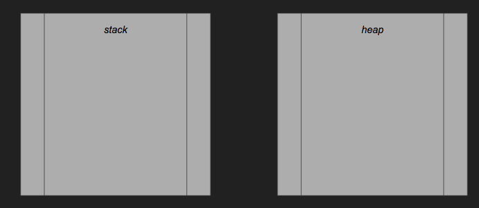
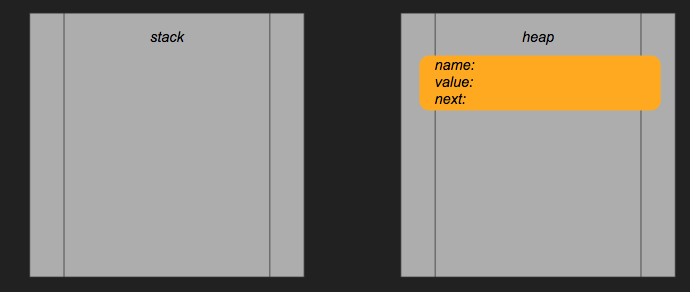
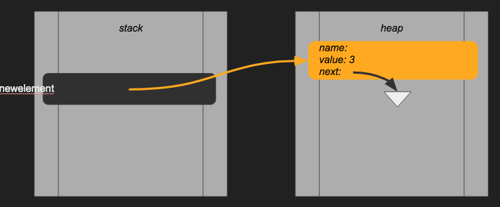
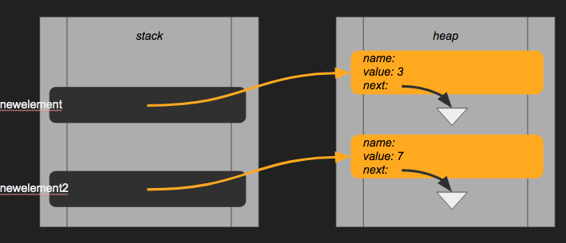
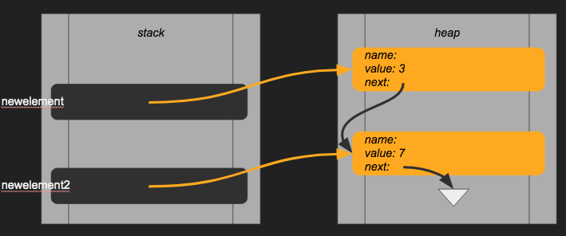
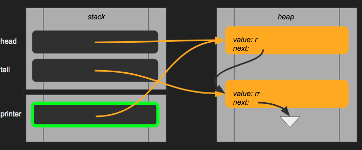

Because in C everything passed by-value, we can manipulate the values of variables in a function that has been declared outside with pointers. In Java you can also change the value of member variables in objects, but not primitives! How do you switch two numbers without giving anything back?
#include <stdio.h>
void swap(int *px, int *py) {
int temp;
temp = *px;
*px = *py;
*py = temp;
}
int main() {
int x = 10, y = 20;
swap(&x, &y);
printf("(%d, %d)\n", x, y); // print (20, 10)
}
Something like that is unthinkable in Java - we need extra tricks for that, such as passing objects. Of course this implementation is also disadvantageous: is it clear to the caller that variables are being changed? Not really. High-performance algorithm implementations benefit from these possibilities. Clear domain-driven applications are not: a higher language is used for that.
To prevent further confusion, it is possible to mark pointers with the const keyword, meaning the value should not be changed. The pointer can still point to another value! As such, this is by no means a “constant”, like in many other traditional programming languages. Take the above example, and change swap’s signature to void swap(const int *px, const int *py). While compiling the code, the following errors are generated:
test.c:5:9: error: read-only variable is not assignable
*px = *py;
~~~ ^
test.c:6:9: error: read-only variable is not assignable
*py = temp;
~~~ ^
2 errors generated.
With the const keyword, we prohibit programmers from using *ptr = ... - that is, assigning another value as a dereferenced pointer. ptr = &temp is still possible, however. If you do not want pointers to change addresses, use const int* const px. That’s right, two times const - this is not a mistake. This reads, from right to left, as:
Introducing the second const gives the following error when attempting to change the pointer itself:
test.c:5:8: error: read-only variable is not assignable
px = &temp;
~~ ^
1 error generated.
In practice, try to use as many constant variables as possible, if you want to make sure the passed values stay the same.
Pointers and arrays go hand-in-hand in C. Pointers can be moved around by adding and subtracting. On pointers you can also perform operations such as ++ and -- that move the pointer in the memory one place to the left or right. With char * text = "sup" the pointer refers to the first character:
Creating an own version of printf("%s", tekst) could be implemented by looping through the pointer until nothing is left to print, like this:
void print_text(char *txt) {
while(*txt != '\0') {
printf("%c", *txt);
txt++;
}
}
Notice txt++. We simply point to the next possible value in the memory space, which hopefully is still a character. If it is not, and it came from a string, it will be ended with \0. Adding some value beyond the limit will result in calling upon unintended memory values, resulting in possible glitches. But C will not crash, it is very robust. You should pay extra attention while fiddling about with pointers! For instance:
In C, a[i] exactly the same as *(a + i)!
#include <stdio.h>
int main() {
char txt[4] = "hey";
char* ptr = txt;
char otherstuff[10] = "other";
for(int i = 0; i < 5; i++) {
printf("%c", *ptr);
ptr++;
}
}
Depending on your compiler, the above code will print “hey ot”, meaning your ptr pointer is pointing to the next variable on the local stack after the four characters “h”, “e”, “y”, “\0”, from the txt variable, are processed within the for loop. We will go more into detail on this in chapter 5.
What happens when I change txt[4] to txt[3]?
Jumping to the next available address space also works with structures instead of a character array:
#include <stdlib.h>
#include <stdio.h>
typedef struct Doos { int one; int two; } Doos;
int main() {
Doos doos1 = { 1, 2 };
Doos doos2 = { 3, 4 };
Doos* doosje = malloc(sizeof(Doos) * 2);
doosje[0] = doos1;
doosje[1] = doos2;
for(int i = 0; i < 2; i++) {
printf("doos: one %d two %d\n", doosje->one, doosje->two);
doosje++;
}
return 0;
}
The only problem here is that we cannot loop “until the end” using while(*doosje) { ... }. For that to work, we need linked lists (see lab 2).
In C, the new keyword does not exist. Creating instances is done using malloc() instead.
You will discover in exercise ‘the ancient library’, you can link different struct instances together to create a list of items, instead of simply using Arrays or other existing data structures. Internally in the C libraries, pointers are applied to connect elements of a collection. Let us try to do the same.
This is how the memory structure of your C code looks like without initializing any single variable:

Given the following structure:
struct node {
char* name;
char* value;
struct node* next;
};
When instantiating a node element using malloc(), we create a new variable on the heap instead of the stack:

However, this representation is incomplete! We create a new local variable, a pointer, and this pointer is actually also a variable on the stack. So, this code:
void create_node() {
node* newelement = malloc(sizeof(node));
newelement->name = "something";
newelement->value = "value";
newelement->next = NULL;
}
Reserves some space on the heap, but also creates a local variable named newelement on the stack:

The next value is pointing to NULL (“nothing”), hence the white arrow in the right side of the Figure. Now, what if I want to create a second element, and connect both together? A second local variable reserves a second block on both the stack and the heap:

Now, we want to assign the second element to the next property of the first element. That’s very simple with the statement newelement->next = newelement2;. Now, our memory looks like this:

Notice the changed arrow in the right side of the Figure. Ok, what if we want to loop over all elements by following the arrows from each element, starting with the first, what happens with our variables in the memory space? A new method creates a new chunk in the stack space, where a new variable will be created:
void print(node* printer) {
while(printer != NULL) {
printf("%s \n", printer->value);
printer = printer->next;
}
}
void main() {
node* head = create_node();
node* tail = create_node();
head->next = tail;
print(head);
}

In the above Figure, printer points to the first value in the heap, which is the same as the variable head. When the while() loop starts doing it’s work, the variable will point to the next value, and the next, and the next, until it points to NULL.
This will become clear in the exercise when you will implement these concepts yourself.
When changing the value of printer, the value of head stays pointing to the first element of the heap! This is because the variable is a copy on the stack.
What if we want to change the pointer of head using another variable? Then you will need double pointers, or node**:
void change_ptr(node** ptr_to_ptr, node* new_value) {
*ptr_to_ptr = new_value;
}